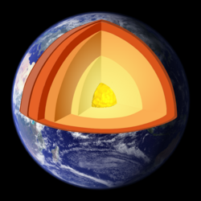

Ionosphere
| Part of a series of |
| Geophysics |
|---|
|  |
The ionosphere (/aɪˈɒnəˌsfɪər/)[1][2] is the ionized part of the upper atmosphere of Earth, from about 48 km (30 mi) to 965 km (600 mi) above sea level,[3] a region that includes the thermosphere and parts of the mesosphere and exosphere. The ionosphere is ionized by solar radiation. It plays an important role in atmospheric electricity and forms the inner edge of the magnetosphere.[4] It has practical importance because, among other functions, it influences radio propagation to distant places on Earth.[5] Travel through this layer also impacts GPS signals, resulting in effects such as deflection in their path and delay in the arrival of the signal.[6]
History of discovery
As early as 1839, the German mathematician and physicist Carl Friedrich Gauss postulated that an electrically conducting region of the atmosphere could account for observed variations of Earth's magnetic field.[7] Sixty years later, Guglielmo Marconi received the first trans-Atlantic radio signal on December 12, 1901, in St. John's, Newfoundland (now in Canada) using a 152.4 m (500 ft) kite-supported antenna for reception.[8] The transmitting station in Poldhu, Cornwall, used a spark-gap transmitter to produce a signal with a frequency of approximately 500 kHz and a power of 100 times more than any radio signal previously produced. The message received was three dits, the Morse code for the letter S. To reach Newfoundland the signal would have to bounce off the ionosphere twice. Dr. Jack Belrose has contested this, however, based on theoretical and experimental work.[9] However, Marconi did achieve transatlantic wireless communications in Glace Bay, Nova Scotia, one year later.[10]
In 1902, Oliver Heaviside proposed the existence of the Kennelly–Heaviside layer of the ionosphere which bears his name.[11] Heaviside's proposal included means by which radio signals are transmitted around the Earth's curvature. Also in 1902, Arthur Edwin Kennelly discovered some of the ionosphere's radio-electrical properties.[12]
In 1912, the U.S. Congress imposed the Radio Act of 1912 on amateur radio operators, limiting their operations to frequencies above 1.5 MHz (wavelength 200 meters or smaller). The government thought those frequencies were useless. This led to the discovery of HF radio propagation via the ionosphere in 1923.[13]
In 1925, observations during a solar eclipse in New York by Dr. Alfred N. Goldsmith and his team demonstrated the influence of sunlight on radio wave propagation, revealing that short waves became weak or inaudible while long waves steadied during the eclipse, thus contributing to the understanding of the ionosphere's role in radio transmission.[14]
In 1926, Scottish physicist Robert Watson-Watt introduced the term ionosphere in a letter published only in 1969 in Nature:[15]
We have in quite recent years seen the universal adoption of the term 'stratosphere'..and..the companion term 'troposphere'... The term 'ionosphere', for the region in which the main characteristic is large scale ionisation with considerable mean free paths, appears appropriate as an addition to this series.
In the early 1930s, test transmissions of Radio Luxembourg inadvertently provided evidence of the first radio modification of the ionosphere; HAARP ran a series of experiments in 2017 using the eponymous Luxembourg Effect.[16]
Edward V. Appleton was awarded a Nobel Prize in 1947 for his confirmation in 1927 of the existence of the ionosphere. Lloyd Berkner first measured the height and density of the ionosphere. This permitted the first complete theory of short-wave radio propagation. Maurice V. Wilkes and J. A. Ratcliffe researched the topic of radio propagation of very long radio waves in the ionosphere. Vitaly Ginzburg has developed a theory of electromagnetic wave propagation in plasmas such as the ionosphere.
In 1962, the Canadian satellite Alouette 1 was launched to study the ionosphere. Following its success were Alouette 2 in 1965 and the two ISIS satellites in 1969 and 1971, further AEROS-A and -B in 1972 and 1975, all for measuring the ionosphere.
On July 26, 1963, the first operational geosynchronous satellite Syncom 2 was launched.[17] On board radio beacons on this satellite (and its successors) enabled – for the first time – the measurement of total electron content (TEC) variation along a radio beam from geostationary orbit to an earth receiver. (The rotation of the plane of polarization directly measures TEC along the path.) Australian geophysicist Elizabeth Essex-Cohen from 1969 onwards was using this technique to monitor the atmosphere above Australia and Antarctica.[18]
Geophysics
The ionosphere is a shell of electrons and electrically charged atoms and molecules that surrounds the Earth,[19] stretching from a height of about 50 km (30 mi) to more than 1,000 km (600 mi). It exists primarily due to ultraviolet radiation from the Sun.
The lowest part of the Earth's atmosphere, the troposphere, extends from the surface to about 10 km (6 mi). Above that is the stratosphere, followed by the mesosphere. In the stratosphere incoming solar radiation creates the ozone layer. At heights of above 80 km (50 mi), in the thermosphere, the atmosphere is so thin that free electrons can exist for short periods of time before they are captured by a nearby positive ion. The number of these free electrons is sufficient to affect radio propagation. This portion of the atmosphere is partially ionized and contains a plasma which is referred to as the ionosphere.
Ultraviolet (UV), X-ray and shorter wavelengths of solar radiation are ionizing, since photons at these frequencies contain sufficient energy to dislodge an electron from a neutral gas atom or molecule upon absorption. In this process the light electron obtains a high velocity so that the temperature of the created electronic gas is much higher (of the order of thousand K) than the one of ions and neutrals. The reverse process to ionization is recombination, in which a free electron is "captured" by a positive ion. Recombination occurs spontaneously, and causes the emission of a photon carrying away the energy produced upon recombination. As gas density increases at lower altitudes, the recombination process prevails, since the gas molecules and ions are closer together. The balance between these two processes determines the quantity of ionization present.
Ionization depends primarily on the Sun and its Extreme Ultraviolet (EUV) and X-ray irradiance which varies strongly with solar activity. The more magnetically active the Sun is, the more sunspot active regions there are on the Sun at any one time. Sunspot active regions are the source of increased coronal heating and accompanying increases in EUV and X-ray irradiance, particularly during episodic magnetic eruptions that include solar flares that increase ionization on the sunlit side of the Earth and solar energetic particle events that can increase ionization in the polar regions. Thus the degree of ionization in the ionosphere follows both a diurnal (time of day) cycle and the 11-year solar cycle. There is also a seasonal dependence in ionization degree since the local winter hemisphere is tipped away from the Sun, thus there is less received solar radiation. Radiation received also varies with geographical location (polar, auroral zones, mid-latitudes, and equatorial regions). There are also mechanisms that disturb the ionosphere and decrease the ionization.
Sydney Chapman proposed that the region below the ionosphere be called neutrosphere[20] (the neutral atmosphere).[21][22]
Layers of ionization
This section needs additional citations for verification. (December 2024) |
At night the F layer is the only layer of significant ionization present, while the ionization in the E and D layers is extremely low. During the day, the D and E layers become much more heavily ionized, as does the F layer, which develops an additional, weaker region of ionization known as the F1 layer. The F2 layer persists by day and night and is the main region responsible for the refraction and reflection of radio waves.
D layer
The D layer is the innermost layer, 48 to 90 km (30 to 56 mi) above the surface of the Earth. Ionization here is due to Lyman series-alpha hydrogen radiation at a wavelength of 121.6 nanometre (nm) ionizing nitric oxide (NO). In addition, solar flares can generate hard X-rays (wavelength < 1 nm) that ionize N2 and O2. Recombination rates are high in the D layer, so there are many more neutral air molecules than ions.
Medium frequency (MF) and lower high frequency (HF) radio waves are significantly attenuated within the D layer, as the passing radio waves cause electrons to move, which then collide with the neutral molecules, giving up their energy. Lower frequencies experience greater absorption because they move the electrons farther, leading to greater chance of collisions. This is the main reason for absorption of HF radio waves, particularly at 10 MHz and below, with progressively less absorption at higher frequencies. This effect peaks around noon and is reduced at night due to a decrease in the D layer's thickness; only a small part remains due to cosmic rays. A common example of the D layer in action is the disappearance of distant AM broadcast band stations in the daytime.
During solar proton events, ionization can reach unusually high levels in the D-region over high and polar latitudes. Such very rare events are known as Polar Cap Absorption (PCA) events, because the increased ionization significantly enhances the absorption of radio signals passing through the region.[23] In fact, absorption levels can increase by many tens of dB during intense events, which is enough to absorb most (if not all) transpolar HF radio signal transmissions. Such events typically last less than 24 to 48 hours.
E layer
The E layer is the middle layer, 90 to 150 km (56 to 93 mi) above the surface of the Earth. Ionization is due to soft X-ray (1–10 nm) and far ultraviolet (UV) solar radiation ionization of molecular oxygen (O2). Normally, at oblique incidence, this layer can only reflect radio waves having frequencies lower than about 10 MHz and may contribute a bit to absorption on frequencies above. However, during intense sporadic E events, the Es layer can reflect frequencies up to 50 MHz and higher. The vertical structure of the E layer is primarily determined by the competing effects of ionization and recombination. At night the E layer weakens because the primary source of ionization is no longer present. After sunset an increase in the height of the E layer maximum increases the range to which radio waves can travel by reflection from the layer.
This region is also known as the Kennelly–Heaviside layer or simply the Heaviside layer. Its existence was predicted in 1902 independently and almost simultaneously by the American electrical engineer Arthur Edwin Kennelly (1861–1939) and the British physicist Oliver Heaviside (1850–1925). In 1924 its existence was detected by Edward V. Appleton and Miles Barnett.
Es layer
The Es layer (sporadic E-layer) is characterized by small, thin clouds of intense ionization, which can support reflection of radio waves, frequently up to 50 MHz and rarely up to 450 MHz. Sporadic-E events may last for just a few minutes to many hours. Sporadic E propagation makes VHF-operating by radio amateurs very exciting when long-distance propagation paths that are generally unreachable "open up" to two-way communication. There are multiple causes of sporadic-E that are still being pursued by researchers. This propagation occurs every day during June and July in northern hemisphere mid-latitudes when high signal levels are often reached. The skip distances are generally around 1,640 km (1,020 mi). Distances for one hop propagation can be anywhere from 900 to 2,500 km (560 to 1,550 mi). Multi-hop propagation over 3,500 km (2,200 mi) is also common, sometimes to distances of 15,000 km (9,300 mi) or more.
F layer
The F layer or region, also known as the Appleton–Barnett layer, extends from about 150 km (93 mi) to more than 500 km (310 mi) above the surface of Earth. It is the layer with the highest electron density, which implies signals penetrating this layer will escape into space. Electron production is dominated by extreme ultraviolet (UV, 10–100 nm) radiation ionizing atomic oxygen. The F layer consists of one layer (F2) at night, but during the day, a secondary peak (labelled F1) often forms in the electron density profile. Because the F2 layer remains by day and night, it is responsible for most skywave propagation of radio waves and long distance high frequency (HF, or shortwave) radio communications.
Above the F layer, the number of oxygen ions decreases and lighter ions such as hydrogen and helium become dominant. This region above the F layer peak and below the plasmasphere is called the topside ionosphere.
From 1972 to 1975 NASA launched the AEROS and AEROS B satellites to study the F region.[24]
Ionospheric model
An ionospheric model is a mathematical description of the ionosphere as a function of location, altitude, day of year, phase of the sunspot cycle and geomagnetic activity. Geophysically, the state of the ionospheric plasma may be described by four parameters: electron density, electron and ion temperature and, since several species of ions are present, ionic composition. Radio propagation depends uniquely on electron density.
Models are usually expressed as computer programs. The model may be based on basic physics of the interactions of the ions and electrons with the neutral atmosphere and sunlight, or it may be a statistical description based on a large number of observations or a combination of physics and observations. One of the most widely used models is the International Reference Ionosphere (IRI),[25] which is based on data and specifies the four parameters just mentioned. The IRI is an international project sponsored by the Committee on Space Research (COSPAR) and the International Union of Radio Science (URSI).[26] The major data sources are the worldwide network of ionosondes, the powerful incoherent scatter radars (Jicamarca, Arecibo, Millstone Hill, Malvern, St Santin), the ISIS and Alouette topside sounders, and in situ instruments on several satellites and rockets. IRI is updated yearly. IRI is more accurate in describing the variation of the electron density from bottom of the ionosphere to the altitude of maximum density than in describing the total electron content (TEC). Since 1999 this model is "International Standard" for the terrestrial ionosphere (standard TS16457).
Persistent anomalies to the idealized model
Ionograms allow deducing, via computation, the true shape of the different layers. Nonhomogeneous structure of the electron/ion-plasma produces rough echo traces, seen predominantly at night and at higher latitudes, and during disturbed conditions.
Winter anomaly
At mid-latitudes, the F2 layer daytime ion production is higher in the summer, as expected, since the Sun shines more directly on the Earth. However, there are seasonal changes in the molecular-to-atomic ratio of the neutral atmosphere that cause the summer ion loss rate to be even higher. The result is that the increase in the summertime loss overwhelms the increase in summertime production, and total F2 ionization is actually lower in the local summer months. This effect is known as the winter anomaly. The anomaly is always present in the northern hemisphere, but is usually absent in the southern hemisphere during periods of low solar activity.
Equatorial anomaly

Within approximately ± 20 degrees of the magnetic equator, is the equatorial anomaly.[27][28] It is the occurrence of a trough in the ionization in the F2 layer at the equator and crests at about 17 degrees in magnetic latitude.[27] The Earth's magnetic field lines are horizontal at the magnetic equator. Solar heating and tidal oscillations in the lower ionosphere move plasma up and across the magnetic field lines. This sets up a sheet of electric current in the E region which, with the horizontal magnetic field, forces ionization up into the F layer, concentrating at ± 20 degrees from the magnetic equator. This phenomenon is known as the equatorial fountain.[29]
Equatorial electrojet
The worldwide solar-driven wind results in the so-called Sq (solar quiet) current system in the E region of the Earth's ionosphere (ionospheric dynamo region) (100–130 km (60–80 mi) altitude).[citation needed] Resulting from this current is an electrostatic field directed west–east (dawn–dusk) in the equatorial day side of the ionosphere. At the magnetic dip equator, where the geomagnetic field is horizontal, this electric field results in an enhanced eastward current flow within ± 3 degrees of the magnetic equator, known as the equatorial electrojet.[29]
Ephemeral ionospheric perturbations
X-rays: sudden ionospheric disturbances (SID)
When the Sun is active, strong solar flares can occur that hit the sunlit side of Earth with hard X-rays. The X-rays penetrate to the D-region, releasing electrons that rapidly increase absorption, causing a high frequency (3–30 MHz) radio blackout that can persist for many hours after strong flares. During this time very low frequency (3–30 kHz) signals will be reflected by the D layer instead of the E layer, where the increased atmospheric density will usually increase the absorption of the wave and thus dampen it. As soon as the X-rays end, the sudden ionospheric disturbance (SID) or radio black-out steadily declines as the electrons in the D-region recombine rapidly and propagation gradually returns to pre-flare conditions over minutes to hours depending on the solar flare strength and frequency.
Protons: polar cap absorption (PCA)
Associated with solar flares is a release of high-energy protons. These particles can hit the Earth within 15 minutes to 2 hours of the solar flare. The protons spiral around and down the magnetic field lines of the Earth and penetrate into the atmosphere near the magnetic poles increasing the ionization of the D and E layers. PCA's typically last anywhere from about an hour to several days, with an average of around 24 to 36 hours. Coronal mass ejections can also release energetic protons that enhance D-region absorption in the polar regions.
Storms
Geomagnetic storms and ionospheric storms are temporary and intense disturbances of the Earth's magnetosphere and ionosphere.
During a geomagnetic storm the F₂ layer will become unstable, fragment, and may even disappear completely. In the Northern and Southern polar regions of the Earth aurorae will be observable in the night sky.
Lightning
Lightning can cause ionospheric perturbations in the D-region in one of two ways. The first is through VLF (very low frequency) radio waves launched into the magnetosphere. These so-called "whistler" mode waves can interact with radiation belt particles and cause them to precipitate onto the ionosphere, adding ionization to the D-region. These disturbances are called "lightning-induced electron precipitation" (LEP) events.
Additional ionization can also occur from direct heating/ionization as a result of huge motions of charge in lightning strikes. These events are called early/fast.
In 1925, C. T. R. Wilson proposed a mechanism by which electrical discharge from lightning storms could propagate upwards from clouds to the ionosphere. Around the same time, Robert Watson-Watt, working at the Radio Research Station in Slough, UK, suggested that the ionospheric sporadic E layer (Es) appeared to be enhanced as a result of lightning but that more work was needed. In 2005, C. Davis and C. Johnson, working at the Rutherford Appleton Laboratory in Oxfordshire, UK, demonstrated that the Es layer was indeed enhanced as a result of lightning activity. Their subsequent research has focused on the mechanism by which this process can occur.
Applications
Radio communication
Due to the ability of ionized atmospheric gases to refract high frequency (HF, or shortwave) radio waves, the ionosphere can reflect radio waves directed into the sky back toward the Earth. Radio waves directed at an angle into the sky can return to Earth beyond the horizon. This technique, called "skip" or "skywave" propagation, has been used since the 1920s to communicate at international or intercontinental distances. The returning radio waves can reflect off the Earth's surface into the sky again, allowing greater ranges to be achieved with multiple hops. This communication method is variable and unreliable, with reception over a given path depending on time of day or night, the seasons, weather, and the 11-year sunspot cycle. During the first half of the 20th century it was widely used for transoceanic telephone and telegraph service, and business and diplomatic communication. Due to its relative unreliability, shortwave radio communication has been mostly abandoned by the telecommunications industry, though it remains important for high-latitude communication where the availability of satellite-based radio communication may be insufficient. Shortwave broadcasting is useful in crossing international boundaries and covering large areas at low cost. Automated services still use shortwave radio frequencies, as do radio amateur hobbyists for private recreational contacts and to assist with emergency communications during natural disasters. Armed forces use shortwave so as to be independent of vulnerable infrastructure, including satellites, and the low latency of shortwave communications make it attractive to stock traders, where milliseconds count.[30]
Mechanism of refraction
When a radio wave reaches the ionosphere, the electric field in the wave forces the electrons in the ionosphere into oscillation at the same frequency as the radio wave. Some of the radio-frequency energy is given up to this resonant oscillation. The oscillating electrons will then either be lost to recombination or will re-radiate the original wave energy. Total refraction can occur when the collision frequency of the ionosphere is less than the radio frequency, and if the electron density in the ionosphere is great enough.
A qualitative understanding of how an electromagnetic wave propagates through the ionosphere can be obtained by recalling geometric optics. Since the ionosphere is a plasma, it can be shown that the refractive index is less than unity. Hence, the electromagnetic "ray" is bent away from the normal rather than toward the normal as would be indicated when the refractive index is greater than unity. It can also be shown that the refractive index of a plasma, and hence the ionosphere, is frequency-dependent, see Dispersion (optics).[31]
The critical frequency is the limiting frequency at or below which a radio wave is reflected by an ionospheric layer at vertical incidence. If the transmitted frequency is higher than the plasma frequency of the ionosphere, then the electrons cannot respond fast enough, and they are not able to re-radiate the signal. It is calculated as shown below:

where N = electron density per m3 and fcritical is in Hz.
The Maximum Usable Frequency (MUF) is defined as the upper frequency limit that can be used for transmission between two points at a specified time.

where = angle of arrival, the angle of the wave relative to the horizon, and sin is the sine function.

{kind=link}
{kind=link}
{kind=link}
{kind=link}
{kind=link}
{kind=link}
{kind=link}
{kind=link}
The cutoff frequency is the frequency below which a radio wave fails to penetrate a layer of the ionosphere at the incidence angle required for transmission between two specified points by refraction from the layer.
GPS/GNSS ionospheric correction
This section needs expansion. You can help by adding to it. (October 2013) |
{kind=link}
There are a number of models used to understand the effects of the ionosphere on global navigation satellite systems. The Klobuchar model is currently used to compensate for ionospheric effects in GPS. This model was developed at the US Air Force Geophysical Research Laboratory circa 1974 by John (Jack) Klobuchar.[32] The Galileo navigation system uses the NeQuick model.[33] GALILEO broadcasts 3 coefficients to compute the effective ionization level, which is then used by the NeQuick model to compute a range delay along the line-of-sight.[34]
Other applications
The open system electrodynamic tether, which uses the ionosphere, is being researched. The space tether uses plasma contactors and the ionosphere as parts of a circuit to extract energy from the Earth's magnetic field by electromagnetic induction.
Measurements
{kind=link}
Overview
Scientists explore the structure of the ionosphere by a wide variety of methods. They include:
- passive observations of optical and radio emissions generated in the ionosphere
- bouncing radio waves of different frequencies from it
- incoherent scatter radars such as the EISCAT, Sondre Stromfjord, Millstone Hill, Arecibo, Advanced Modular Incoherent Scatter Radar (AMISR) and Jicamarca radars
- coherent scatter radars such as the Super Dual Auroral Radar Network (SuperDARN) radars
- special receivers to detect how the reflected waves have changed from the transmitted waves.
A variety of experiments, such as HAARP (High Frequency Active Auroral Research Program), involve high power radio transmitters to modify the properties of the ionosphere. These investigations focus on studying the properties and behavior of ionospheric plasma, with particular emphasis on being able to understand and use it to enhance communications and surveillance systems for both civilian and military purposes. HAARP was started in 1993 as a proposed twenty-year experiment, and is currently active near Gakona, Alaska.
The SuperDARN radar project researches the high- and mid-latitudes using coherent backscatter of radio waves in the 8 to 20 MHz range. Coherent backscatter is similar to Bragg scattering in crystals and involves the constructive interference of scattering from ionospheric density irregularities. The project involves more than 11 countries and multiple radars in both hemispheres.
Scientists are also examining the ionosphere by the changes to radio waves, from satellites and stars, passing through it. The Arecibo Telescope located in Puerto Rico, was originally intended to study Earth's ionosphere.
Ionograms
Ionograms show the virtual heights and critical frequencies of the ionospheric layers and which are measured by an ionosonde. An ionosonde sweeps a range of frequencies, usually from 0.1 to 30 MHz, transmitting at vertical incidence to the ionosphere. As the frequency increases, each wave is refracted less by the ionization in the layer, and so each penetrates further before it is reflected. Eventually, a frequency is reached that enables the wave to penetrate the layer without being reflected. For ordinary mode waves, this occurs when the transmitted frequency just exceeds the peak plasma, or critical, frequency of the layer. Tracings of the reflected high frequency radio pulses are known as ionograms. Reduction rules are given in: "URSI Handbook of Ionogram Interpretation and Reduction", edited by William Roy Piggott and Karl Rawer, Elsevier Amsterdam, 1961 (translations into Chinese, French, Japanese and Russian are available).
Incoherent scatter radars
Incoherent scatter radars operate above the critical frequencies. Therefore, the technique allows probing the ionosphere, unlike ionosondes, also above the electron density peaks. The thermal fluctuations of the electron density scattering the transmitted signals lack coherence, which gave the technique its name. Their power spectrum contains information not only on the density, but also on the ion and electron temperatures, ion masses and drift velocities. Incoherent scatter radars can also measure neutral atmosphere movements, such as atmospheric tides, after making assumptions about ion-neutral collision frequency across the ionospheric dynamo region.[35]
GNSS radio occultation
Radio occultation is a remote sensing technique where a GNSS signal tangentially scrapes the Earth, passing through the atmosphere, and is received by a Low Earth Orbit (LEO) satellite. As the signal passes through the atmosphere, it is refracted, curved and delayed. An LEO satellite samples the total electron content and bending angle of many such signal paths as it watches the GNSS satellite rise or set behind the Earth. Using an Inverse Abel's transform, a radial profile of refractivity at that tangent point on earth can be reconstructed.
Major GNSS radio occultation missions include the GRACE, CHAMP, and COSMIC.
Indices of the ionosphere
In empirical models of the ionosphere such as Nequick, the following indices are used as indirect indicators of the state of the ionosphere.
Solar intensity
F10.7 and R12 are two indices commonly used in ionospheric modelling. Both are valuable for their long historical records covering multiple solar cycles. F10.7 is a measurement of the intensity of solar radio emissions at a frequency of 2800 MHz made using a ground radio telescope. R12 is a 12 months average of daily sunspot numbers. The two indices have been shown to be correlated with each other.
However, both indices are only indirect indicators of solar ultraviolet and X-ray emissions, which are primarily responsible for causing ionization in the Earth's upper atmosphere. We now have data from the GOES spacecraft that measures the background X-ray flux from the Sun, a parameter more closely related to the ionization levels in the ionosphere.
Geomagnetic disturbances
- The A- and K-indices are a measurement of the behavior of the horizontal component of the geomagnetic field. The K-index uses a semi-logarithmic scale from 0 to 9 to measure the strength of the horizontal component of the geomagnetic field. The Boulder K-index is measured at the Boulder Geomagnetic Observatory.
- The geomagnetic activity levels of the Earth are measured by the fluctuation of the Earth's magnetic field in SI units called teslas (or in non-SI gauss, especially in older literature). The Earth's magnetic field is measured around the planet by many observatories. The data retrieved is processed and turned into measurement indices. Daily measurements for the entire planet are made available through an estimate of the Ap-index, called the planetary A-index (PAI).
Ionospheres of other planets and natural satellites
Objects in the Solar System that have appreciable atmospheres (i.e., all of the major planets and many of the larger natural satellites) generally produce ionospheres.[36] Planets known to have ionospheres include Venus, Mars,[37] Jupiter, Saturn, Uranus, and Neptune.
The atmosphere of Titan includes an ionosphere that ranges from about 880 to 1,300 km (550 to 810 mi) in altitude and contains carbon compounds.[38] Ionospheres have also been observed at Io, Europa, Ganymede, Triton, and Pluto.
See also
Notes
- ^ Jones, Daniel (2003) [1917]. "ionosphere". In Peter Roach; James Hartmann; Jane Setter (eds.). English Pronouncing Dictionary. Cambridge: Cambridge University Press. ISBN 978-3-12-539683-8.
- ^ "ionosphere". Merriam-Webster.com Dictionary. Merriam-Webster.
- ^ Zell, Holly (2 March 2015). "Earth's Atmospheric Layers". NASA. Retrieved 2020-10-23.
- ^ Gallagher, D. L. (April 26, 2023). "The Earth's Plasmasphere". NASA. Retrieved 2025-07-23.
- ^ Rawer, K. (1993). Wave Propagation in the Ionosphere. Dordrecht: Kluwer Academic. ISBN 0-7923-0775-5.
- ^ Lopez, Ericson D.; Ubillus, Bryan A.; Meza, Ariel A. (2024). "Preliminary mapping of ionospheric total electron content (TEC) over Ecuador using global positioning system (GPS) data". arXiv:2403.19053 [physics.space-ph].
- ^ Gauss, Carl Friedrich (1839). "Allgemeine Theorie des Erdmagnetismus [General theory of terrestrial magnetism]". In Gauss, Carl Friedrich; Weber, Wilhelm (eds.). Resultate aus den Beobachtungen des Magnetischen Vereins im Jahre 1838 [Findings from the Observations of the Magnetic Society in the Year 1838] (in German). Leipzig, (Germany): Weidmanns' Bookshop. pp. 1–57. Gauss speculated that magnetic forces might be generated not only by electrical currents flowing through the Earth's interior but also by some sort of electrical current(s) flowing through the atmosphere. From p. 50: "§ 36. Ein anderer Theil unserer Theorie, über welchen ein Zweifel Statt finden kann, ist die Voraussetzung, … zu untersuchen, wie die aus denselben hervorgehende magnetische Wirkung auf der Erdoberfläche sich gestalten würde." (Another part of our theory about which doubt may arise is the assumption that the agents of terrestrial magnetic force have their source exclusively in the interior of the Earth. If the immediate causes [of terrestrial magnetism] should be sought entirely or in part outside [the Earth's interior], then we can — in so far as we exclude baseless fantasies and we want to restrict ourselves to the scientifically known [facts] — consider only galvanic currents. Atmospheric air is not a conductor of such currents; empty space also is not: thus our knowledge fails us when we seek a carrier for galvanic currents in the upper regions [of the atmosphere]. Only the enigmatic phenomena of the northern lights — in which by all appearances electricity in motion plays a major role — prohibits us from simply denying the possibility of such currents just on account of that ignorance, and in any case it remains interesting to investigate how the magnetic effect resulting from [those currents] would manifest itself on the Earth's surface.)
- English translation: Gauss, Carl Friedrich; Sabine, Elizabeth Juliana, trans. (1841). "General theory of terrestrial magnetism". In Taylor, Richard (ed.). Scientific Memoirs, Selected from the Transactions of Foreign Academies of Science and Learned Societies, and from Foreign Journals. London, England: Richard and John E. Taylor. pp. 184–251.
{{cite book}}: CS1 maint: multiple names: authors list (link) See p. 229. - English translation: Glassmeier, K.-H; Tsurutani, B. T. (2014). "Carl Friedrich Gauss – General Theory of Terrestrial Magnetism – a revised translation of the German text". History of Geo- and Space Sciences. 5 (1): 11–62. Bibcode:2014HGSS....5...11G. doi:10.5194/hgss-5-11-2014.
- English translation: Gauss, Carl Friedrich; Sabine, Elizabeth Juliana, trans. (1841). "General theory of terrestrial magnetism". In Taylor, Richard (ed.). Scientific Memoirs, Selected from the Transactions of Foreign Academies of Science and Learned Societies, and from Foreign Journals. London, England: Richard and John E. Taylor. pp. 184–251.
- ^ Marconi, Guglielmo (January 2002). "Wireless telegraphic communication". Resonance. 7 (1): 95–101. doi:10.1007/bf02836176. ISSN 0971-8044.
- ^ John S. Belrose, "Fessenden and Marconi: Their Differing Technologies and Transatlantic Experiments During the First Decade of this Century Archived 2009-01-23 at the Wayback Machine". International Conference on 100 Years of Radio, 5–7 September 1995.
- ^ "Marconi and the History of Radio". IEEE Antennas and Propagation Magazine. 46.
- ^ Heaviside, Oliver (1902). "Telegraphy". Encyclopaedia Britannica. Vol. 33 (10th ed.). pp. 213–235. Speaking of wireless telegraphy, Heaviside speculated about the propagation of Hertzian (radio) waves through the atmosphere. From p. 215: "There may possibly be a sufficiently conducting layer in the upper air. If so, the waves will, so to speak, catch on to it more or less. Then the guidance will be the sea on one side and the upper layer on the other."
- ^ Kennelly, A.E. (15 March 1902). "On the elevation of the electrically conducting strata of the earth's atmosphere". The Electrical World and Engineer. 39 (11): 473.
- ^ worldradiohistory.com: Broadcast listening in the pioneer days of radio on the short waves, 1923 1945 Jerome S. Berg Quote: "...In addition to having to obtain licenses - a constraint to which they adapted only slowly - the amateurs were, with some exceptions, restricted to the range below 200 meters (that is, above 1500 kc.), bands that were largely unexplored and thought to be of little value. The navy attributed most interference to the amateurs, and was happy to see them on the road to a hoped - for extinction. From the amateurs' point of view, their development of the shortwave spectrum began less as a love affair than a shotgun marriage. However, all that would change...It took several years before experimenters ventured above 2-3 mc. and started to understand such things as shortwave propagation and directionality. The short waves, as they were called, were surrounded with mystery...Also in 1928 Radio News publisher Hugo Gernsback began shortwave broadcasting on 9700 kc. from his station, WRNY, New York, using the call W2XAL. "A reader in New South Wales, Aus- tralia," reported Gernsback, "writes us that while he was writing his letter he was listening to WRNY's short-wave transmitter, 2XAL, on a three-tube set; and had to turn down the volume, otherwise he would wake up his family. All this at a distance of some 10,000 miles! Yet 2XAL ...uses less than 500 watts; a quite negligible amount of power. "6...The 1930s were the golden age of shortwave broadcasting...Shortwave also facilitated communication with people in remote areas. Amateur radio became a basic ingredient of all expeditions...The term shortwave was generally taken to refer to anything above 1.5 mc., without upper limit...", backup
- ^ "Sun Affects Radio, Observations Show". The New York Times. No. 24473. 25 January 1925. pp. 1, 4. Retrieved 25 January 2024.
- ^ The letter, dated 8 November 1926, was addressed to the Secretary
of the Radio Research Board.
- The letter was quoted in: Gardiner, G. W. (13 December 1969). "Origin of the term Ionosphere". Nature. 224 (5224): 1096. Bibcode:1969Natur.224.1096G. doi:10.1038/2241096a0. S2CID 4296253.
- See also: Ratcliffe, J.A. (1975). "Robert Alexander Watson-Watt". Biographical Memoirs of Fellows of the Royal Society. 21: 549–568. See p. 554.
- ^ "Gakona HAARPoon 2017". 2017-02-19. Archived from the original on 2017-02-20.
- ^ "Firsts in the Space Race. From an Australian perspective". harveycohen.net. Archived from the original on 11 September 2017. Retrieved 8 May 2018.
- ^ "Elizabeth A. Essex-Cohen Ionospheric Physics Papers etc". harveycohen.net. Archived from the original on 11 September 2017. Retrieved 8 May 2018.
- ^ "The Ionosphere | Center for Science Education". scied.ucar.edu. Retrieved 2023-04-05.
- ^ Chapman, Sydney (1950). "Upper atmospheric nomenclature". Journal of Geophysical Research. 55 (4): 395–399. Bibcode:1950JGR....55..395C. doi:10.1029/JZ055i004p00395. ISSN 0148-0227.
- ^ Yiğit, Erdal (27 July 2015). Atmospheric and Space Sciences: Neutral Atmospheres: Volume 1. Springer. ISBN 9783319215815.
- ^ "Neutrosphere - Glossary of Meteorology". Glossary.ametsoc.org. 2012-01-26. Retrieved 2022-08-12.
- ^ Rose, D.C.; Ziauddin, Syed (June 1962). "The polar cap absorption effect". Space Science Reviews. 1 (1): 115. Bibcode:1962SSRv....1..115R. doi:10.1007/BF00174638. S2CID 122220113.
- ^ Yenne, Bill (1985). The Encyclopedia of US Spacecraft. Exeter Books (A Bison Book), New York. ISBN 978-0-671-07580-4. p. 12 AEROS
- ^ Bilitza, 2001
- ^ "International Reference Ionosphere". Ccmc.gsfc.nasa.gov. Archived from the original on 2011-02-23. Retrieved 2011-11-08.
- ^ a b Andreeva, E. S.; Franke, S. J.; Yeh, K. C.; Kunitsyn, V. E. (2000-08-15). "Some features of the equatorial anomaly revealed by ionospheric tomography". Geophysical Research Letters. 27 (16): 2465–2468. doi:10.1029/1999GL003725. ISSN 0094-8276.
- ^ Wu, Tsung-Yu; Liu, Jann-Yenq; Chang, Loren C.; Lin, Chien-Hung; Chiu, Yi-Chung (2021-07-19). "Equatorial ionization anomaly response to lunar phase and stratospheric sudden warming". Scientific Reports. 11 (1): 14695. doi:10.1038/s41598-021-94326-x. ISSN 2045-2322. PMC 8289839. PMID 34282218.
- ^ a b Bridgman, Tom (2018-01-31). "NASA Scientific Visualization Studio | Interface to Space: The Equatorial Fountain". NASA Scientific Visualization Studio. Retrieved 2024-09-30.
- ^ Arikan, Toros; Singer, Andrew C. (2021). "Receiver Designs for Low-Latency HF Communications". IEEE Transactions on Wireless Communications. 20 (5): 3005–3015. doi:10.1109/TWC.2020.3046475. S2CID 233990323.
- ^ Lied, Finn (1967). High Frequency Radio Communications with Emphasis on Polar Problems. Advisory Group for Aerospace Research and Development. pp. 1–6.
- ^ "ION Fellow - Mr. John A. Klobuchar". www.ion.org. Archived from the original on 4 October 2017. Retrieved 8 May 2018.
- ^ "Ionospheric Correction Algorithm for Galileo Single Frequency Users" (PDF). Galileo Open Service. Archived (PDF) from the original on 10 February 2018. Retrieved 9 February 2018.
- ^ "Ionospheric Corrections for GNSS" (PDF).
- ^ Günzkofer, F.; Pokhotelov, D.; Stober, G.; et al. (2022-09-25). "Determining the Origin of Tidal Oscillations in the Ionospheric Transition Region With EISCAT Radar and Global Simulation Data". Journal of Geophysical Research: Space Physics. 127 (10). doi:10.1029/2022JA030861.
- ^ "Planetary ionospheres". Department of Physics and Astronomy. Uppsala University. Retrieved 2023-06-04.
- ^ "Mars Express: First global map of martian ionosphere". Archived from the original on 2015-09-10. Retrieved 2015-10-31.
- ^ NASA/JPL: Titan's upper atmosphere Archived 2011-05-11 at the Wayback Machine Accessed 2010-08-25
References
- Davies, Kenneth (1990). Ionospheric Radio. IEE Electromagnetic Waves Series #31. London, UK: Peter Peregrinus Ltd/The Institution of Electrical Engineers. ISBN 978-0-86341-186-1.
- Hargreaves, J. K. (1992). The Upper Atmosphere and Solar-Terrestrial Relations. Cambridge University Press.
- Kelley, M. C. (2009). The Earth's Ionosphere: Plasma Physics and Electrodynamics (2nd ed.). Academic Press. ISBN 9780120884254.
- McNamara, Leo F. (1994). Radio Amateurs Guide to the Ionosphere. Krieger Pub. ISBN 978-0-89464-804-5.
- Rawer, K. (1993). Wave Propagation in the Ionosphere. Dordrecht: Kluwer Academic Publ. ISBN 978-0-7923-0775-4.
- Bilitza, Dieter (2001). "International Reference Ionosphere 2000" (PDF). Radio Science. 36 (2): 261–275. Bibcode:2001RaSc...36..261B. doi:10.1029/2000RS002432. hdl:2060/19910021307. S2CID 116976314.
- J. Lilensten, P.-L. Blelly: Du Soleil à la Terre, Aéronomie et météorologie de l'espace, Collection Grenoble Sciences, Université Joseph Fourier Grenoble I, 2000. ISBN 978-2-86883-467-6.
- P.-L. Blelly, D. Alcaydé: Ionosphere, in: Y. Kamide, A. Chian, Handbook of the Solar-Terrestrial Environment, Springer-Verlag Berlin Heidelberg, pp. 189–220, 2007. doi:10.1007/11367758_8
- Volland, H. (1984). Atmospheric Electrodynamics. Berlin: Springer Verlag.
- Schunk, R. W.; Nagy, A. F. (2009). "Ionospheres: Physics, Plasma Physics, and Chemistry". Eos Transactions. 82 (46) (2nd ed.): 556. Bibcode:2001EOSTr..82..556K. doi:10.1029/01EO00328. ISBN 9780521877060.
External links
{kind=link}
{kind=link}
- Gehred, Paul, and Norm Cohen, SWPC's Radio User's Page.
- Amsat-Italia project on Ionospheric propagation (ESA SWENET website)
- NZ4O Solar Space Weather & Geomagnetic Data Archive
- NZ4O 160 Meter (Medium Frequency)Radio Propagation Theory Notes Layman Level Explanations Of "Seemingly" Mysterious 160 Meter (MF/HF) Propagation Occurrences
- USGS Geomagnetism Program
- Encyclopædia Britannica, Ionosphere and magnetosphere
- Current Space Weather Conditions
- Current Solar X-Ray Flux
- Super Dual Auroral Radar Network
- European Incoherent Scatter radar system
{kind=link}
{kind=link}